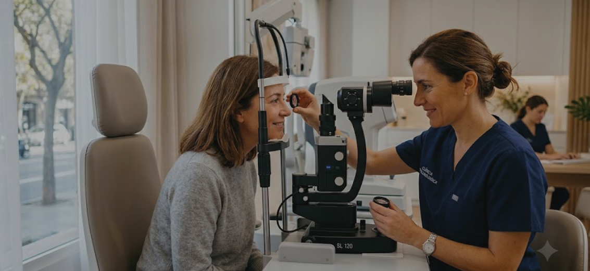
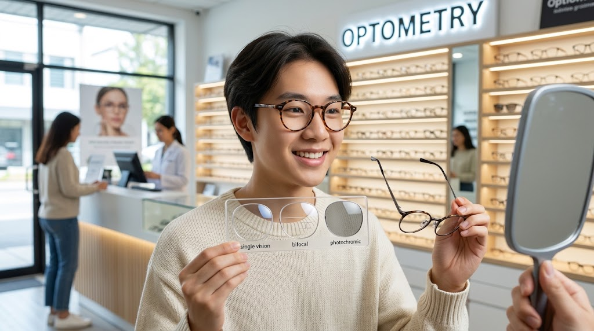

Información para cuidar tu salud visual
Consejos, recomendaciones y contenido especializado de nuestros profesionales para ayudarte a cuidar tu visión.

Salud Visual
¿Cada cuánto tiempo debo realizarme un examen de la vista?
La frecuencia ideal para revisar tu salud visual según tu edad y factores de riesgo.
Salud Visual
5 señales de que necesitas visitar al oftalmólogo
Reconoce las alertas que tu cuerpo te da cuando algo no está bien con tu visión.
Salud Visual
Cataratas: sus síntomas, causas y tratamiento
Todo lo que debes saber sobre una de las condiciones oculares más frecuentes con la edad.
Salud Visual
¿Qué es el pterigión y por qué aparece? - Análisis
Conoce esta condición ocular, sus causas más comunes y cuándo es necesario tratarla quirúrgicamente.
Salud Visual
Ojo seco: sus causas, síntomas y cómo tratarlo
Una condición cada vez más común, especialmente por el uso excesivo de pantallas.

Salud Visual
Miopía, hipermetropía y astigmatismo: ¿cuál es la diferencia?
Los errores refractivos más comunes explicados de forma sencilla.